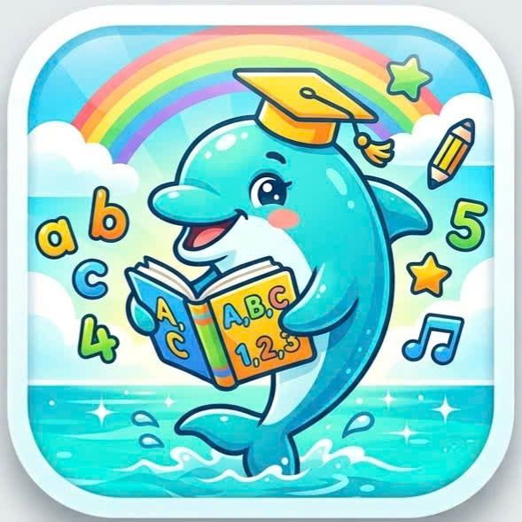
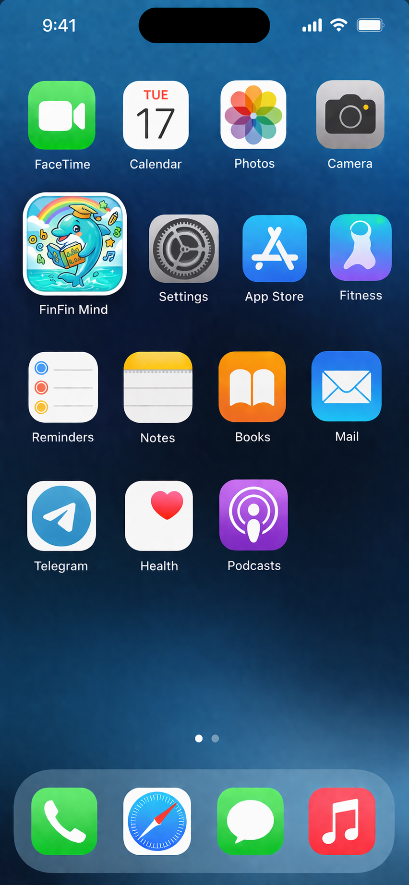

FinFin Mind - Ứng dụng giúp trẻ phát triển tư duy phản biện thông qua hệ thống trò chơi tương tác sinh động. Nền tảng tích hợp chặt chẽ hai phân hệ dành cho trẻ và phụ huynh, cho phép theo dõi tiến bộ một cách trực quan theo thang đo 5 cấp độ rõ ràng và khoa học.
Đã có hơn 12.450 gia đình
đang đồng hành cùng con mỗi ngày

Trong kỷ nguyên số, trẻ đối mặt với lượng thông tin khổng lồ nhưng thường tiếp nhận thụ động. Thay vì chỉ rèn luyện ghi nhớ như các ứng dụng truyền thống, FinFin Mind tập trung vào "thời kỳ vàng" (3-10 tuổi) để rèn luyện năng lực đặt câu hỏi, phân tích, và đưa ra kết luận logic.
Thông qua các hoạt động tương tác cao, trẻ chủ động tham gia vào quá trình suy luận, đưa ra lựa chọn và giải thích quan điểm, từ đó hình thành tư duy phản biện một cách tự nhiên nhất.
Hỗ trợ phụ huynh theo dõi, đánh giá tiến bộ của trẻ một cách trực quan qua cơ sở dữ liệu học tập. Ứng dụng không chỉ là sản phẩm giáo dục mà còn là công cụ gắn kết gia đình.
Khai thác thế mạnh của công nghệ số, ứng dụng game hóa và phân tích dữ liệu để cá nhân hóa lộ trình. Tạo tiền đề mở rộng triển khai tại các cơ sở giáo dục mầm non và tiểu học.
Thực tế hiện nay cho thấy các phương pháp dạy học tư duy phản biện truyền thống thường mang tính lý thuyết, chưa phù hợp với đặc điểm tâm lý của trẻ nhỏ. FinFin Mind giải quyết bài toán này bằng cách lấy người học làm trung tâm, chuyển dịch từ giáo dục thiên về lý thuyết sang môi trường thực hành đa chiều.
Hệ thống trò chơi tương tác sinh động kết hợp báo cáo theo dõi dành cho phụ huynh với thang đo 5 cấp độ – đồng hành cùng trẻ hình thành tư duy phản biện một cách tự nhiên, hứng thú và bền vững.
Mỗi trò chơi xoay quanh một tình huống cụ thể. Trẻ nhận diện vấn đề, lựa chọn phương án xử lý, giải thích lý do và nhận phản hồi ngay lập tức.
150+ tình huống trò chơi từ cơ bản đến nâng cao. Hệ thống tự động điều chỉnh theo khả năng nhận thức của trẻ.
Báo cáo chi tiết + thang đo 5 cấp độ. Dữ liệu giúp cá nhân hóa lộ trình cho từng trẻ.